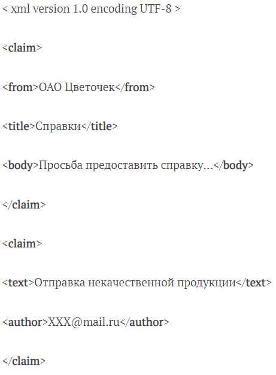
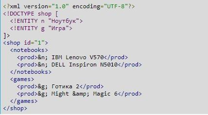

Чем XML отличается от HTML?
Отличие XML от HTML
Язык гипертекстовой разметки (HTML) – это язык, используемый на большинстве веб-страниц. Веб-браузер обрабатывает HTML-документы и отображает их в виде мультимедийной страницы. Консорциум World Wide Web (W3C) – это международное сообщество, которое разрабатывает протоколы и руководящие принципы для обеспечения долгосрочного роста Интернета. Компания W3C установила стандарты HTML и расширяемого языка разметки (XML), которые разработчики веб-сайтов внедряют для обеспечения согласованности и качества.
Для разработки веб-страниц часто используется HTML. XML-язык дополняет его, и наоборот. Данные programming languages отличаются своим предназначением, но фактически делают друг друга более полными и функциональными.
XML-язык применяется для хранения и передачи информации. HTML нужно использовать для отображения имеющихся материалов.
Теги в HTML являются предопределенными. Браузерам известно, как отображать данные, заключенные в соответствующие элементы. В случае с XML предопределения нет. Теги будут задаться программистом. Браузеры «по умолчанию» ничего о них не знают.
Документы XML с легкостью конвертируются в HTML. При передаче информации с сервера в браузер, соответствующая операция происходит автоматически. Для ручного конвертирования нужно пользоваться специальным программным обеспечением. Примеры: Fconvert, Aconvert, BeautifyConverter.
Ключевые особенности
Рассматриваемый язык описания документов и веб-страниц предусматривает ряд особенностей. Их надо запомнить перед тем, как пользователь начнет изучать основы разработки на этом яхыке программирования:
- XML гарантирует работу большинства приложений, даже если добавить или удалить часть информации. Он поддерживает инструменты и элементы для создания новых версий (new versions) файлов, объектов.
- Данные, которые хранятся в XML-документах, являются машинно-независимыми. Это связано с тем, что информация размещается в файле в виде текстовом формате.
- Язык просто понять людям и устройствам. Его основным преимуществом является высокий уровень читаемости. Пример – для обозначения выделения текста жирным необходимо написать <Жирный> </Жирный>. Аналогичный синтаксис в HTML будет выглядеть как <b> </b>.
- Размер XML-файла будет больше, чем в случае с бинарным представлением того или иного элемента. Для крупных проектов соответствующий момент может стать настоящей проблемой.
- Синтаксис XML разнообразен и обширен, но большинство имеющихся задач можно решить простыми и производительными способами. Изучение этого ЯП в мельчайших подробностях требуется крайне редко.
- У языка программирования XML высокий уровень гибкости. Он сопряжен с отсутствием жестких ограничений, что позволяет одной и той же структуре быть представленной множеством методов/способов.
Программистам, решившим заниматься веб-разработкой, рекомендуется изучать данный ЯП вместе с CSS и HTML. Все это позволит добиться максимального результата при формировании крупных проектов.
Стандарты
Изучая основы XML, необходимо обратить внимание на его расширения. Они называются стандартами. Такие элементы используются для расширяемости языка программирования:
- xPath – отвечает за навигацию по документам;
- XSLT – преобразование XML-документов в другие форматы;
- AJAX – изменение содержимого веб-страницы, не перезагружая ее;
- XQuery – обработка данных в XML-представлении;
- DOM – получение, изменение, удаление и добавление отдельных элементов из исходного файла;
- DTD – определение списка разрешенных элементов для сущности в файле .xml.
XML-документ – это данные, которые просто заключены в теги. Для их обработки необходимо использовать заранее написанную программу.
Основы синтаксиса
Изучение рассматриваемого ЯП для начинающих – не самая трудная задача, особенно если разобраться с нюансами синтаксиса, структурами файлов и иными элементами языка.
Структура XML является древовидной. Простыми словами – это значит, что в создаваемых файлах применяются теговые наборы. Внутри них допускается расположение других тегов со своими собственными параметрами (значениями).
Теги заключаются в угловые скобки <>. Самый верхнеуровневый узел является корнем. Все, что расположено под ним – это листья.
Ниже – наглядный пример того, как выглядит документ на изучаемом языке:
Создавая элементы .xml, программисту предстоит запомнить некоторые правила. Они звучат так:
- В XML-документе может быть так называемый «пролог». Он располагается в верхней части файла. В заданном примере строка указывает на то, что документ создан в version XML 1.0, а используемая кодировка у него – UTF-8. Такой элемент может пригодиться, если в файле имеется текст, написанный на разных языках.
- Все элементы исходного документа содержат закрывающие теги. Для их обозначения используется символ «слеш» (/).
- Описание структуры XML в обязательном порядке включает в себя корневой элемент. Он называется «root». В примере обозначен как <claim>.
- Следует помнить, что XML-документы и их элементы чувствительны к регистру. Простыми словами: <Claim> и <claim> – это разные составляющие кодов.
- Открывающий и закрывающий теги – элементы, которые необходимо жестко контролировать. Это связано с тем, что их вложенность должна соблюдаться. В противном случае правильность и корректность кода будет находиться под вопросом.
- Формат описания XML требует, чтобы атрибуты заключались в кавычки. В качестве атрибута выступает характеристика тега. Соответствующий элемент может быть у любых теговых записей. В «прологе» приведенного выше примера – это encoding и version. В качестве значений используются записи «1.0», «UTF-8».
Формат XML-данных подразумевает учет всех символов форматирования. Сюда включены такие элементы как табуляция, строковые переводы и пробелы.
Структура
Вот – простой пример XML-файла. Он будет использоваться для того чтобы понять, как выглядит структура документа:
Здесь:
- В самом начале задается заголовок. Приведенный выше пример – универсальный вариант. Единственное, что может меняться в нем – это кодировка.
- После идет секция DOCTYPE. Она поддерживает описание сущностей XML-файла. Тут это «n» со значением «Ноутбук», а также «g» со значением «Игра». Сущность – это некая константа. Она может быть использована в теле XML-документа. Это необходимо для сокращения записей, их представления в более легкой форме.
- Далее работать предстоит с телом XML-файла. Здесь команды и работа строятся/осуществляются точно также, как и в случае с HTML. Все представлено в виде тегов (элементов) с атрибутами. Их названия должны придумываться разработчиком самостоятельно.
Два наглядных примера файлов на изучаемом ЯП изучены. Теперь имеет смысл сконцентрироваться на теоретических сведениях. Они будут усвоены быстрее и лучше.
Типы взаимосвязей
Тексты XML-документов имеют различные взаимосвязи. Элементы файлов поддерживают пять типов «соединений»:
- Родитель. Родителем является элемент, который расположен на 1 уровень выше.
- Дочерний элемент. Полная противоположность родителю. «Дочерний элемент» означает, что соответствующий компонент расположен ровно на один уровень ниже. Родитель может быть только 1, а «дочерей» – много.
- Предок. Элемент, который для заданного в XML-документе расположен более чем на 1 уровень выше.
- Потомок. Элемент XML-документа, расположенный ниже чем на 1 уровень для заданного.
- Брат. Элемент в «сообщении» будет называться братом другому, если они расположены на одном и том же уровне. Дополнительно у таких компонентов должен быть общий родитель.
Теги
Теги – это основные элементы, которые использует язык XML. Команды или просто «узлы». С их помощью составляются запросы для формирования сообщения/файла. Их имена, согласно синтаксису programming language, заключаются в треугольные скобки.
При работе с тегами необходимо использовать схему, подобную XHTML. Каждый узел должен иметь открывающий и закрывающий компоненты. В противном случае при обработке сообщения система выведет на экран ошибку.
В XML-документах могут размещаться вложенные теги. Дочерние элементы не должны быть перекрыты – конечный узел должен иметь точно такое же имя, как у последнего непревзойденного начального.
<?xml version = "1.0"?>
<contact-info>
<company>TutorialsPoint
<contact-info>
</company>
<?xml version = "1.0"?>
<contact-info>
<company>TutorialsPoint</company>
contact-info
Вот – примеры запроса с вложенностью тегов. Первый – неправильный, второй – грамотно составленный.
Узел может быть пустым. Текст сообщения, размещаемый между начальным и конечным тегами в XML-документе – это контент. Узел без содержимого является пустым. Он имеет несколько способов отображения:
- полным тегом пустого узла: <hr/>;
- начальной меткой, после которого следует конечная: <hr></hr>.